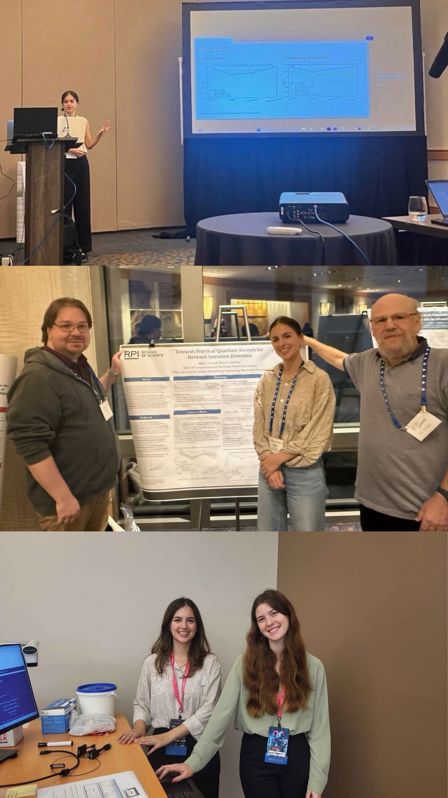

My research interests lie primarily at the intersection of quantum algorithms and scientific computing.
Prior work has consisted of algorithmic work toward the binary closest vector problem
using HPCs and quantum computing (DQI), exploring QML and quantum kernels for cybersecurity applications,
and using VQEs for chemical simulation. For all of these I am interested in circuit optimization and routing
for NISQ computers. See more below.

research
Future of Computing Summer Intern — National Security AgencySummer 2026
Co-developed the blocked fast Walsh–Hadamard transform (BFWHT), an exact
set-covering decoder for the low-weight binary closest vector problem, with
CUDA/GPU implementations benchmarked on A100-class hardware. Built the
end-to-end Decoded Quantum Interferometry (DQI) research codebase with
interchangeable decoders and reversible resource estimation, and executed on
a 156-qubit IBM QPU.
Quantum Machine Learning Researcher — RPI School of ScienceSummer 2025
Designed a Qiskit quantum-kernel/SVM pipeline for network intrusion detection,
achieving 85%+ accuracy on RPI's 127-qubit IBM Quantum System One. Built the
reproducible QML-NIDS
codebase and first-authored the resulting AAAI QIML proceedings paper.
Work expanded into cross-university projects involving the use of QML for
phishing and malware detection, employing a kernel-optimized version of the original QML NIDS workflow.
OTHER RESEARCH PROJECTS2024 – Present
Quantum chemistry research--ongoing work at RPI with Dr. Osama Raisuddin on exploring circuit optimization
via constant-depth Pauli exponential decomposition for use in molecular simulation with variational quantum eigensolvers.
QML research in collaboration with Dr. Brian McDermott at RPI and the Naval Nuclear Laboratory on evaluating the NISQ performance of
quantum methods using 3-SAT and DQI.
Studied hybrid quantum-classical transformers for the traveling salesman problem alongside graduate researchers at
the Chinese University of Hong Kong.
(2023-2024)--cybersecurity research with Dr. Brian Callahan at RPI--Developed augmented-reality CTF challenges in steganography, DNS poisoning, and
MFA bypass; coauthored a CISSE journal article and ASIA proceedings paper on
generative AI and cybersecurity pedagogy.
Cybersecurity Research Assistant — Rensselaer Cybersecurity Collaboratory2024 – 2025
Developed augmented-reality CTF challenges in steganography, DNS poisoning, and
MFA bypass; coauthored a CISSE journal article and ASIA proceedings paper on
generative AI and cybersecurity pedagogy.
publications & presentations
Towards Efficient Low-Weight Decoding: A Blocked Fast Walsh–Hadamard Transform
Cotrupi, M. L., Gutti, M., Ralph, B., & Sandberg, K. (2026). FCSI 2026 final research report, National Security Agency.
At n=64, m=2,097,152, t=8, the BFWHT reduced estimated decoding operations by 732× versus optimized Gray-code enumeration, and reduced estimated logical qubits for DQI by 688× on a 64×64 benchmark.
Towards Practical Quantum Kernels for Network Intrusion Detection
Cotrupi, M. L., & Callahan, B. R. (2025). Proceedings of the AAAI Symposium Series, 7(1), 339–342. doi:10.1609/aaaiss.v7i1.36903 · pdf
Author's note: my first foray into quantum computing. This 10-week project culminated in a paper and poster at the first AAAI QIML symposium—and it was so much fun that it entirely shifted my focus within computer science toward quantum, which I now aim to pursue in post-graduate study.
A Case Study for Combating Student Overuse of Generative AI in Cybersecurity Education
Sugerman, S., Joseph, S., Colognato, Q., Cotrupi, M. L., et al. (2026). Journal of The Colloquium for Information Systems Security Education, 13(1), Article 11. doi:10.53735/cisse.v13i1.216
RC3TF, an Augmented Reality CTF: Improving Cybersecurity Pedagogy for the Undergraduate Research Laboratory
Callahan, B. R., Joseph, S., Sugerman, S., Colognato, Q., Cotrupi, M. L., et al. (2025). Proceedings of the 20th Annual Symposium on Information Assurance (ASIA). doi:10.2139/SSRN.6550178
Generative AI for Cybersecurity Awareness Training: Skills, Strategies, and Accountabilities
Callahan, B., Colognato, Q., & Cotrupi, M. (2024). Presented at BSides St. Pete, FL. Sep. 14, 2024.
projects
about.
hi!
My name's Mary—I'm a computer science student at Rensselaer Polytechnic
Institute, pursuing a B.S. (May 2027) with
minors in Quantum Computing and IT & Web Science.
On this site you can find information about my research in work, how to reach me in contact, and
some info about my art interests in art for fun!